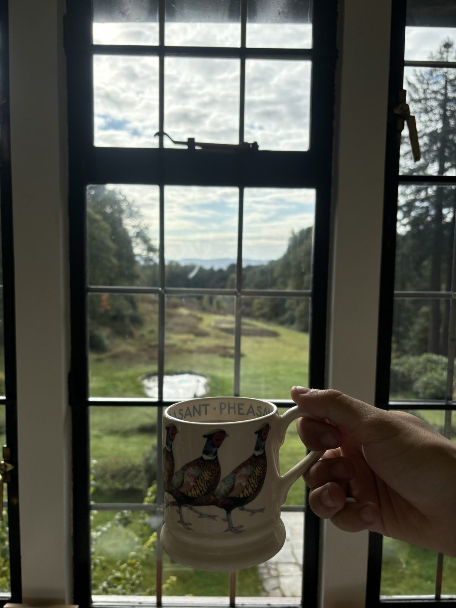
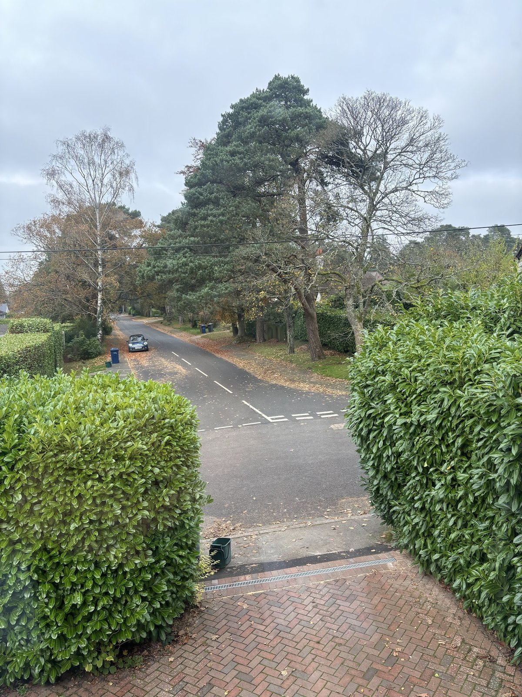
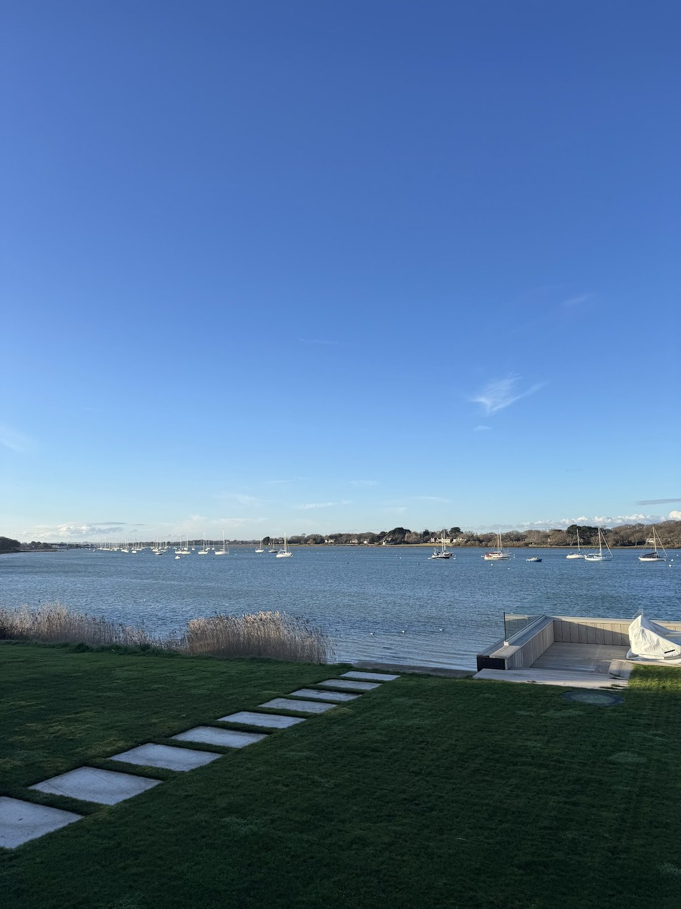
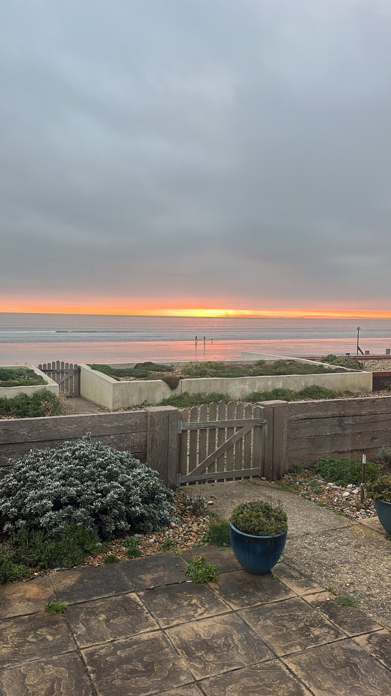

A HISTÓRIA POR TRÁS DA MARCA
Um lugar que virou parte de mim.
Minha história com a Inglaterra começou ainda na infância e cresceu entre família, estudos, trabalho e experiências que quero compartilhar com você.
Conheça minha história
ONDE TUDO COMEÇOU
Uma viagem que ficou comigo.
Sou Breno. Fui à Inglaterra pela primeira vez quando tinha entre 9 e 10 anos e me apaixonei pelo país, pela cultura e pelo jeito de viver. Naquele momento, comecei a imaginar que ali poderia construir parte da minha jornada.
Com o tempo, essa ligação se tornou ainda mais forte. Minha família vive na Inglaterra há mais de 20 anos, e cada visita, conversa e experiência foi aproximando o país da minha própria história.


UM LUGAR PARA CHAMAR DE ESPECIAL
Entre a vida real e as lembranças.
Chichester é uma cidade histórica em West Sussex, no sul da Inglaterra, entre a costa e a região das South Downs. Com o tempo, tornou-se um lugar muito especial para mim, uma das cidades onde mais gosto de estar e viver. De trem, a viagem até Londres costuma levar por volta de uma hora e meia a duas horas, dependendo do serviço.
Para mim, a Inglaterra é mais do que um destino: é uma paixão, um lugar de paz e um espaço onde gosto de me conectar comigo mesmo. É essa Inglaterra, vivida de perto, que quero mostrar aqui.
APRENDER VIVENDO
Estudos, trabalho e novas perspectivas.
Minha trajetória também passou pela educação e pelo mundo profissional. Estudei no East Surrey College, na Inglaterra, e fiz estágio como controller na Ford, em Thurrock.
Essas experiências me aproximaram da língua, das pessoas e da rotina britânica. Ao longo de quase 16 anos de vivência com a Inglaterra, aprendi que uma conversa ou um detalhe do dia a dia pode ensinar muito.
O QUE ME MOVE
Uma paixão que se compartilha.
Sou apaixonado pelo futebol inglês e pela forma como a cultura do país faz parte da vida das pessoas. Mas o que mais me marcou foram as experiências que se acumulam fora dos cartões-postais, as conversas, as descobertas e os momentos que fazem um lugar ganhar significado.
O You Living in UK nasceu dessa vontade de dividir o que vivi e aprendi. Quero ajudar você a descobrir a Inglaterra, praticar o inglês britânico e encontrar apoio para viver sua própria experiência com mais confiança.
Conheça nossos caminhos
SUA HISTÓRIA TAMBÉM COMEÇA AQUI
Há muito mais para descobrir.
Cultura, lugares, inglês e histórias reais. Venha conhecer a Inglaterra por um olhar brasileiro.
Explorar a Inglaterra